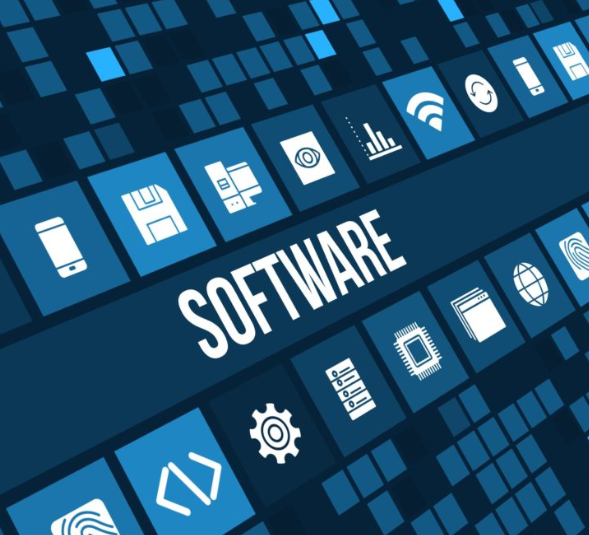

| herkagn we will have tom | soft | ware |
|---|

Computer software, or simply software, is a collection of data or computer instructions that tell the computer how to work. This is in contrast to physical hardware, from which the system is built and actually performs the work. In computer science and software engineering, computer software is all information processed by computer systems, programs and data. Computer software includes computer programs, libraries and related non-executable data, such as online documentation or digital media. Computer hardware and software require each other and neither can be realistically used on its own. At the lowest programming level,[clarification needed] executable code consists of machine language instructions supported by an individual processor—typically a central processing unit (CPU) or a graphics processing unit (GPU). A machine language consists of groups of binary values signifying processor instructions that change the state of the computer from its preceding state. For example, an instruction may change the value stored in a particular storage location in the computer—an effect that is not directly observable to the user. An instruction may also invoke one of many input or output operations, for example displaying some text on a computer screen; causing state changes which should be visible to the user. The processor executes the instructions in the order they are provided, unless it is instructed to "jump" to a different instruction, or is interrupted by the operating system. As of 2015, most personal computers, smartphone devices and servers have processors with multiple execution units or multiple processors performing computation together, and computing has become a much more concurrent activity than in the past. The majority of software is written in high-level programming languages. They are easier and more efficient for programmers because they are closer to natural languages than machine languages.[1] High-level languages are translated into machine language using a compiler or an interpreter or a combination of the two. Software may also be written in a low-level assembly language, which has strong correspondence to the computer's machine language instructions and is translated into machine language using an assembler. Based on the goal, computer software can be divided into: Application software which is software that uses the computer system to perform special functions or provide entertainment functions beyond the basic operation of the computer itself. There are many different types of application software, because the range of tasks that can be performed with a modern computer is so large—see list of software. System software which is software for managing computer hardware behaviour, as to provide basic functionalities that are required by users, or for other software to run properly, if at all. System software is also designed for providing a platform for running application software,[5] and it includes the following: Operating systems which are essential collections of software that manage resources and provides common services for other software that runs "on top" of them. Supervisory programs, boot loaders, shells and window systems are core parts of operating systems. In practice, an operating system comes bundled with additional software (including application software) so that a user can potentially do some work with a computer that only has one operating system. Device drivers which operate or control a particular type of device that is attached to a computer. Each device needs at least one corresponding device driver; because a computer typically has at minimum at least one input device and at least one output device, a computer typically needs more than one device driver. Utilities which are computer programs designed to assist users in the maintenance and care of their computers. Malicious software or malware which is software that is developed to harm and disrupt computers. As such, malware is undesirable. Malware is closely associated with computer-related crimes, though some malicious programs may have been designed as practical jokes. Nature or domain of execution Desktop applications such as web browsers and Microsoft Office, as well as smartphone and tablet applications (called "apps"). (There is a push in some parts of the software industry to merge desktop applications with mobile apps, to some extent. Windows 8, and later Ubuntu Touch, tried to allow the same style of application user interface to be used on desktops, laptops and mobiles.) JavaScript scripts are pieces of software traditionally embedded in web pages that are run directly inside the web browser when a web page is loaded without the need for a web browser plugin. Software written in other programming languages can also be run within the web browser if the software is either translated into JavaScript, or if a web browser plugin that supports that language is installed; the most common example of the latter is ActionScript scripts, which are supported by the Adobe Flash plugin. Server software, including: Web applications, which usually run on the web server and output dynamically generated web pages to web browsers, using e.g. PHP, Java, ASP.NET, or even JavaScript that runs on the server. In modern times these commonly include some JavaScript to be run in the web browser as well, in which case they typically run partly on the server, partly in the web browser. Plugins and extensions are software that extends or modifies the functionality of another piece of software, and require that software be used in order to f Software is written in one or more programming languages; there are many programming languages in existence, and each has at least one implementation, each of which consists of its own set of programming tools. These tools may be relatively self-contained programs such as compilers, debuggers, interpreters, linkers, and text editors, that can be combined together to accomplish a task; or they may form an integrated development environment (IDE), which combines much or all of the functionality of such self-contained tools. IDEs may do this by either invoking the relevant individual tools or by re-implementing their functionality in a new way. An IDE can make it easier to do specific tasks, such as searching in files in a particular project. Many programming language implementations provide the option of using both individual tools or an IDE.
--to go--
| main | menu |
|---|